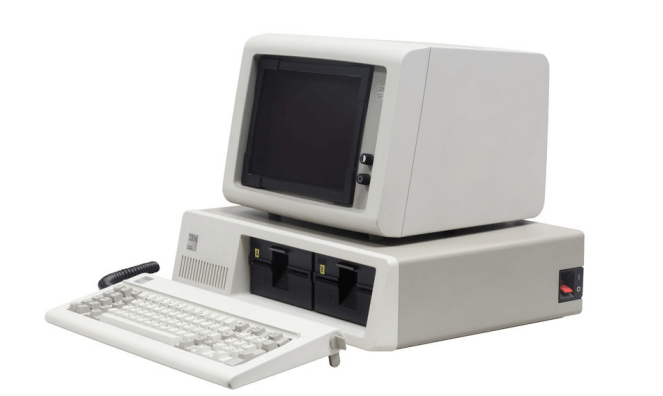
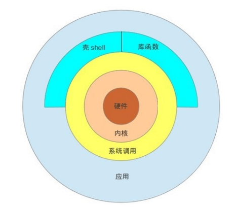
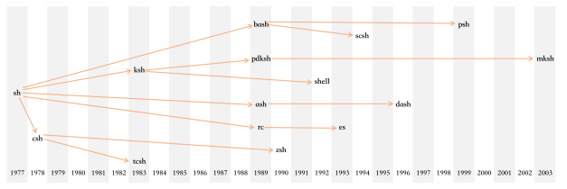
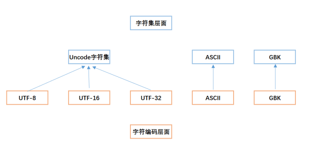
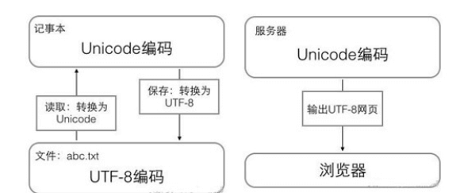
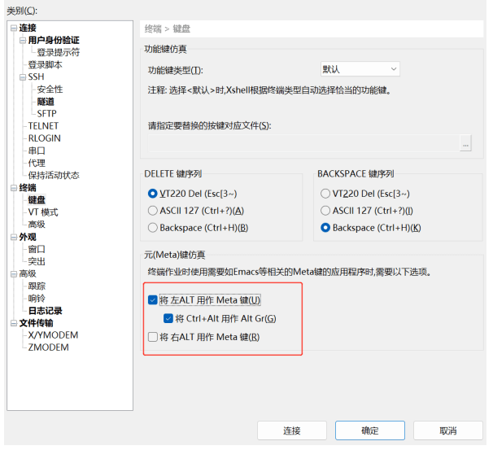

Linux基础 用户类型
root用户
一个特殊的管理账户
也被称为超级用户
root已接近完整的系统控制
对系统危害几乎有无限的能力
除非必要，不要登录root
普通（非特权）用户
权限有限
造成损害的能力比较有限
终端 terminal 终端（英语：Computer terminal），是与计算机系统相连的一种输入输出设备，它用来显示主机运算 的输出，并且接受主机要求的输入，通常离计算机较远。根据功能不同，可分若干类。典型的终端包括 显示器键盘套件，打印机打字机套件等。

随着技术的发展，控制台，终端这些不再是单独的物理设备了，而是被键盘和显示器整合，替代。现在 计算机的console控制台和tty终端都是虚拟出来的概念了，在概念上，键盘和显示器既是console，又是 tty。至于什么时候是console，什么时候是tty，取决于那一刻在做什么。
这里的虚拟，指的是，Linux操作系统中，以一种设备文件的方式保留tty和console(一切皆文件)。当使 用特定软件连接该主机时，就能看到当前连接所占用的终端设备文件，这样就表示该机器的一个终端被 激活，正在使用中。
tty一词源于Teletypes，或者teletypewriters，原来指的是电传打字机，是通过串行线用打印机键盘通 过阅读和发送信息的东西，后来这东西被键盘与显示器取代，所以现在叫终端比较合适
终端类型 控制台终端： /dev/console
串行终端：/dev/ttyS#
虚拟终端：tty：teletypewriters， /dev/tty#，tty 可有n个，Ctrl+Alt+F#
伪终端：pty：pseudo-tty ， /dev/pts/# 如：SSH远程连接
图形终端：startx， xwindows
查看当前的终端设备 tty 命令可以查看当前所在终端
范例：
1 2 [root@centos7 ~] /dev/pts/1
交互式接口 交互式接口：启动终端后，在终端设备附加一个交互式应用程序
交互式接口类型
什么是shell 
Shell 是Linux系统的用户界面，提供了用户与内核进行交互操作的一种接口。它接收用户输入的命令并 把它送入内核去执行
shell也被称为LINUX的命令解释器（command interpreter），Shell 本身是一个程序。将用户输入的 命令行拆解为”命令名“与”参数“。接着，根据命令名找到对应要执行的程序，对被执行的程序进行初始 化，然后将刚才解析出来的参数传给该程序并执行
shell是一种高级程序设计语言，提供了变量，函数，条件判断，循环等开发语言的功能
由于Shell本身是个程序，所以它可以被任何用户自己开发的各种Shell所代替
各种shell 
sh：Steve Bourne
bash：Bourne-Again Shell，GPL，CentOS 和 Ubuntu 默认使用
csh：c shell ，C 语言风格
tcsh：
ksh ：Korn Shell， AIX 默认 shell
zsh： MacOS默认shell
bash shell GNU Bourne-Again Shell(bash)是GNU计划中重要的工具软件之一，目前也是 Linux标准的shell，与 sh兼容
显示当前使用的shell
1 2 [root@centos7 ~] /bin/bash
显示当前系统使用的所有shell
1 2 3 4 5 6 7 [root@centos7 ~] /bin/sh /bin/bash /sbin/nologin /usr/bin/sh /usr/bin/bash /usr/sbin/nologin
设置主机名 1 2 3 4 5 hostname NAME hostnamectl set-hostname NAME
范例
1 2 3 [root@centos7 ~] [root@centos7 ~] [root@bj-yz-k8s-node1-100-10 ~]
注意：
主机名不支持使用下划线，但支持横线，可使用字母，横线或数字组合
有些软件对主机名有特殊要求
一般按照组织的要求设置主机名，通常有一定意义的
范例：错误的主机名可能会导致某些服务无法启动
1 2 3 [root@centos7 ~] [root@centos7 ~] Job for postfix.service failed because the control process exited with error code. See "systemctl status postfix.service" and "journalctl -xe" for details.
命令提示符prompt 登录Linux后，默认的系统命令提示符没有个性，无法明显辨别生产和测试环境，而导致错误操作。可以通过修改PS1变量实现个性的提示符格式，避免这种低级的错误。
范例：默认的提示符
1 2 3 4 5 [root@localhost ~] root@ubuntu1804:~
#：管理员 $：普通用户
显示提示符格式
1 2 [root@centos7 ~] [\u@\h \W]\$
1 2 3 4 5 6 7 8 9 10 11 12 13 14 15 16 17 18 19 20 21 22 23 24 25 26 27 28 29 30 31 32 33 34 35 36 37 38 39 40 41 42 43 44 45 46 47 48 49 50 51 52 53 54 55 56 57 58 59 60 61 62 63 64 65 66 67 68 69 70 71 72 73 74 75 76 77 78 79 80 81 82 83 84 85 86 87 88 89 90 91 92 93 94 95 echo $PS1 [\u@\h \W]\$ [root@rocky86 ~] PS1='\e[31m[\u@\h \W]\$\e[0m' echo "PS1='\e[31m[\u@\h \W]\$\e[0m'" >/etc/profile.d/env.shsource /etc/profile.d/env.sh\d \H \h \t \T \A \@ \u \v \w \W \ \$ \033[ \033[0m \e[31m我是红色\e[0m 字体颜色 背景色 30 40 黑色 31 41 红色 32 42 绿色 33 43 黄色 34 44 蓝色 35 45 紫红色 36 46 青蓝色 37 47 白色 \e[30m我是黑色\e[0m \e[31m我是红色\e[0m \e[32m我是绿色\e[0m \e[33m我是黄色\e[0m \e[34m我是蓝色\e[0m \e[35m我是紫红色\e[0m \e[36m我是青蓝色\e[0m \e[37m我是白色\e[0m \e[40m我背景是黑色\e[0m \e[41m我背景是红色\e[0m \e[42m我背景是绿色\e[0m \e[43m我背景是黄色\e[0m \e[44m我背景是蓝色\e[0m \e[45m我背景是紫红色\e[0m \e[46m我背景是青蓝色\e[0m \e[47m我背景是白色\e[0m \e[30;41m红底黑字\e[0m \e[41;30m红底黑字\e[0m 0 1 3 4 5 7 8 9 \e[30;41;5m红底黑字闪烁\e[0m \e[4;30;41;5m红底黑字下划线闪烁\e[0m \e[0;4;30;41;5m红底黑字下划线闪烁\e[0m \e[4;30;41;5;0m红底黑字下划线闪烁\e[0m
修改提示符格式范例
1 2 3 PS1="\[\e[1;5;41;33m\][\u@\h \w]\\$\[\e[0m\]" PS1="\[\e[1;32m\][\t \[\e[1;33m\]\u\[\e[35m\]@\h\[\e[1;31m\] \w\[\e[1;32m\]]\[\e[0m\]\\$"
范例：在CentOS系统实现持久保存提示符格式
1 2 3 4 5 6 [root@centos7 ~] [root@centos7 ~] PS1="\[\e[1;32m\][\t \[\e[1;33m\]\u\[\e[35m\]@\h\[\e[1;31m\] \w\[\e[1;32m\]]\[\e[0m\]\\$" [root@centos7 ~] [17:23:19 root@centos7 ~]
范例：实现Ubuntu系统持久保存提示符格式
1 2 3 [root@ubuntu2004 ~] [root@ubuntu2004 ~] PS1="\[\e[1;5;41;33m\][\u@\h \w]\\$\[\e[0m\]"
执行命令 执行命令过程 输入命令后回车，提请shell程序找到键入命令所对应的可执行程序或代码，并由其分析后提交给内核分 配资源将其运行起来
shell中可执行的两类命令
内部命令：由shell自带的，而且通过某命令形式提供，用户登录后自动加载并常驻内存中
外部命令：在文件系统路径下有对应的可执行程序文件，当执行命令时才从磁盘加载至内存中，执行 完毕后从内存中删除
区别指定的命令是内部或外部命令
1 2 3 4 5 6 7 8 type COMMANDtype ls type -t echo type -a echo bash -c help help enable help echo
范例: 查看是否存在对应内部和外部命令
1 2 3 4 5 [root@centos7 ~] echo 是 shell 内嵌[root@centos7 ~] echo 是 shell 内嵌echo 是 /usr/bin/echo
有内部命令，又有外部命令，因为不是所有主机都使用标准shell，所以常用内部命令会有一个外部命令 的备份，防止内部命令执行失败。
在命令执行时，shell先判断是否是内部命令，如果是，则执行内部命令，如果不是，则去特定目录下寻 找外部命令。
bash shell 自身就是一个程序，里面有很多小工具，有用户通过终端连接主机，则该终端就有一个bash 在后台运行着
内部命令相关 1 2 3 4 5 help enable enable cmd enable -n cmd enable -n
执行外部命令 查看外部命令路径：
1 2 which -a | --skip-aliaswhereis
范例
1 2 3 4 5 6 7 8 9 10 11 12 13 14 15 16 17 18 19 20 21 22 23 24 25 26 27 28 29 30 31 32 33 [root@rokcy8 ~] alias ls ='ls --color=auto' /usr/bin/ls [root@rokcy8 ~] /usr/bin/ls [root@rokcy8 ~] /usr/bin/echo [root@rokcy8 ~] /usr/local/sbin:/usr/local/bin:/usr/sbin:/usr/bin:/root/bin [root@rokcy8 ~] [root@rokcy8 ~] [root@rokcy8 ~] /usr/bin/echo [root@rokcy8 ~] /usr/bin/echo /root/bin/echo
外部命令搜索路径
1 2 3 4 5 6 7 [root@rokcy8 ~] /usr/local/sbin:/usr/local/bin:/usr/sbin:/usr/bin:/root/bin [root@rokcy8 ~] [mage@rokcy8 ~]$ echo $PATH /home/mage/.local/bin:/home/mage/bin:/usr/local/bin:/usr/bin:/usr/local/sbin:/usr/sbin
Hash缓存表
系统初始hash表为空，当外部命令执行时，默认会从PATH路径下寻找该命令，找到后会将这条命令的 路径记录到hash表中，当再次使用该命令时，shell解释器首先会查看hash表，存在将执行之，如果不 存在，将会去PATH路径下寻找，利用hash缓存表可大大提高命令的调用速率。
hash 只对当前用户的当前终端进程有效，是一组临时数据；
切换用户后无效；
退出重新登录后会被重置；
hash 命令常见用法
1 2 3 4 5 6 hash hash -l hash -p path name hash -t name hash -d name hash -r
范例：
1 2 3 4 5 6 7 8 9 10 11 12 13 14 15 16 17 18 19 20 21 22 23 24 25 26 27 28 29 30 31 32 [root@rokcy8 ~] hits command 1 /usr/bin/rm 1 /usr/bin/cat 3 /usr/bin/ls [root@rokcy8 ~] builtin hash -p /usr/bin/rm rm builtin hash -p /usr/bin/cat cat builtin hash -p /usr/bin/ls ls builtin hash -p /usr/bin/su su[root@rokcy8 ~] [root@rokcy8 ~] hits command 1 /usr/bin/rm 1 /usr/bin/cat 0 /abc 3 /usr/bin/ls 1 /usr/bin/su [root@rokcy8 ~] /usr/bin/rm [root@rokcy8 ~] [root@rokcy8 ~]
命令别名 对于经常执行的较长的命令，可以将其定义成较短的别名，以方便执行
1 2 3 4 alias alias name alias NAME='VALUE' unalias
范例：
1 2 3 4 5 6 7 8 9 10 11 12 13 14 15 16 17 18 19 20 21 22 23 24 25 26 27 28 [root@rokcy8 ~] alias cp ='cp -i' alias egrep='egrep --color=auto' alias fgrep='fgrep --color=auto' alias grep='grep --color=auto' alias l.='ls -d .* --color=auto' alias ll='ls -l --color=auto' [root@rokcy8 ~] alias ls ='ls --color=auto' [root@rokcy8 ~] [root@rokcy8 ~] [root@rokcy8 network-scripts] [root@rokcy8 ~] [root@rokcy8 ~] bash: cdnet: command not found... [root@rokcy8 ~] [root@rokcy8 ~] [root@rokcy8 ~]
范例：扫描新加的磁盘
注意：在命令行中定义的别名，仅对当前shell进程有效
想要永久有效，要定义在配置文件中
仅对当前用户：~/.bashrc
对所有用户：/etc/bashrc
编辑配置文件给出的新配置不会立即生效，bash进程重新读取配置文件
1 2 source /path/to/config_file. /path/to/config_file
如果别名同原命令同名，如果要执行原命令，可使用
1 2 3 4 5 \ALIASNAME "ALIASNAME" 'ALIASNAME' command ALIASNAME/path/command
范例：
1 2 3 4 5 6 7 8 9 10 11 [root@rokcy8 ~] alias ls ='ls --color=auto' [root@rokcy8 ~] [root@rokcy8 ~] [root@rokcy8 ~]
命令执行优先级
别名 —–> 内部命令 ——> 外部命令
命令格式 1 2 3 4 5 6 7 8 9 COMMAND [OPTIONS...] [ARGUMENTS...] COMMAND [COMMAND] [COMMAND] .... COMMAND OPTIONS ARGUMENTS [] ...
选项有多种风格：
短选项：UNIX 风格选项，-c 例如：-l， -h
长选项：GNU风格选项，–word 例如：–all， –human
BSD风格选项： 一个字母，例如：a，使用相对较少
范例:
1 2 3 4 5 6 7 [root@centos8 ~] 1000 [root@centos8 ~] [root@centos8 ~] [root@centos8 ~] [root@centos8 ~] [root@centos8 ~]
注意：
多个选项以及多参数和命令之间使用空白字符分隔
取消和结束命令执行：Ctrl+c，Ctrl+d
多个命令可以用 “;” 符号分开
一个命令可以用\分成多行
常见命令 查看硬件信息 查看cpu lscpu命令可以查看cpu信息
cat /proc/cpuinfo 也可以看到
范例：
1 2 3 4 5 6 7 8 9 10 11 12 13 14 15 16 17 18 19 20 21 22 23 24 25 26 27 28 29 [root@centos7 ~] Architecture: x86_64 CPU op-mode(s): 32-bit, 64-bit Byte Order: Little Endian CPU(s): 4 On-line CPU(s) list: 0-3 Thread(s) per core: 1 Core(s) per socket: 2 座： 2 NUMA 节点： 1 厂商 ID： AuthenticAMD CPU 系列： 23 型号： 104 型号名称： AMD Ryzen 5 5500U with Radeon Graphics 步进： 1 CPU MHz： 2096.064 BogoMIPS： 4192.12 虚拟化： AMD-V 超管理器厂商： VMware 虚拟化类型： 完全 L1d 缓存： 32K L1i 缓存： 32K L2 缓存： 512K L3 缓存： 4096K NUMA 节点0 CPU： 0-3 Flags: [root@centos7 ~]
查看内存大小 1 2 3 4 5 6 7 8 9 10 11 12 13 14 15 16 17 18 19 20 21 22 23 24 25 26 27 28 29 30 31 32 33 34 35 36 37 38 39 40 41 42 43 44 45 46 47 48 49 50 51 52 53 [root@centos7 ~] total used free shared buff/cache available Mem: 4028432 160272 3696504 11824 171656 3633740 Swap: 511996 0 511996 [root@centos7 ~] MemTotal: 4028432 kB MemFree: 3696356 kB MemAvailable: 3633592 kB Buffers: 2108 kB Cached: 101084 kB SwapCached: 0 kB Active: 95536 kB Inactive: 77748 kB Active(anon): 70812 kB Inactive(anon): 11120 kB Active(file): 24724 kB Inactive(file): 66628 kB Unevictable: 0 kB Mlocked: 0 kB SwapTotal: 511996 kB SwapFree: 511996 kB Dirty: 0 kB Writeback: 0 kB AnonPages: 70140 kB Mapped: 26368 kB Shmem: 11824 kB Slab: 68484 kB SReclaimable: 24384 kB SUnreclaim: 44100 kB KernelStack: 4464 kB PageTables: 5100 kB NFS_Unstable: 0 kB Bounce: 0 kB WritebackTmp: 0 kB CommitLimit: 2526212 kB Committed_AS: 287964 kB VmallocTotal: 34359738367 kB VmallocUsed: 186672 kB VmallocChunk: 34359310332 kB HardwareCorrupted: 0 kB AnonHugePages: 6144 kB CmaTotal: 0 kB CmaFree: 0 kB HugePages_Total: 0 HugePages_Free: 0 HugePages_Rsvd: 0 HugePages_Surp: 0 Hugepagesize: 2048 kB DirectMap4k: 91968 kB DirectMap2M: 3053568 kB DirectMap1G: 3145728 kB
free命令补充
1 2 3 4 5 6 7 8 9 10 11 12 13 14 15 16 17 18 [root@rocky86 ~] [root@rocky86 ~] total used free shared buff/cache available
查看硬盘和分区情况 1 2 3 4 5 6 7 8 9 10 11 12 13 14 15 16 17 18 19 20 21 22 23 24 25 26 [root@centos7 ~] NAME MAJ:MIN RM SIZE RO TYPE MOUNTPOINT sda 8:0 0 1000G 0 disk ├─sda1 8:1 0 1000M 0 part /boot └─sda2 8:2 0 600.5G 0 part ├─centos-root 253:0 0 400G 0 lvm / ├─centos-swap 253:1 0 500M 0 lvm [SWAP] └─centos-home 253:2 0 200G 0 lvm /home sdb 8:16 0 100G 0 disk sr0 11:0 1 1024M 0 rom [root@centos7 ~] major minor 8 16 104857600 sdb 8 0 1048576000 sda 8 1 1024000 sda1 8 2 629665792 sda2 11 0 1048575 sr0 253 0 419430400 dm-0 253 1 512000 dm-1 253 2 209715200 dm-2
查看系统版本信息 查看系统架构 查看内核版本 1 2 [root@centos7 ~] 3.10.0-862.el7.x86_64
查看操作系统发行版本 1 2 3 4 5 6 7 8 9 10 11 12 13 14 15 16 17 18 19 20 21 22 23 24 25 26 27 28 29 [root@centos7 ~] CentOS Linux release 7.5.1804 (Core) [root@centos7 ~] NAME="CentOS Linux" VERSION="7 (Core)" ID="centos" ID_LIKE="rhel fedora" VERSION_ID="7" PRETTY_NAME="CentOS Linux 7 (Core)" ANSI_COLOR="0;31" CPE_NAME="cpe:/o:centos:centos:7" HOME_URL="https://www.centos.org/" BUG_REPORT_URL="https://bugs.centos.org/" CENTOS_MANTISBT_PROJECT="CentOS-7" CENTOS_MANTISBT_PROJECT_VERSION="7" REDHAT_SUPPORT_PRODUCT="centos" REDHAT_SUPPORT_PRODUCT_VERSION="7" [root@centos7 ~] [root@centos7 ~] LSB Version: :core-4.1-amd64:core-4.1-noarch:cxx-4.1-amd64:cxx-4.1-noarch:desktop-4.1-amd64:desktop-4.1-noarch:languages-4.1-amd64:languages-4.1-noarch:printing-4.1-amd64:printing-4.1-noarch Distributor ID: CentOS Description: CentOS Linux release 7.5.1804 (Core) Release: 7.5.1804 Codename: Core
日期和时间 Linux的两种时钟 系统时钟：
由Linux内核通过CPU的工作频率进行的
硬件时钟：主板
date 显示和设置系统时间
1 2 用法：date [选项]... [+格式] 或：date [-u|--utc|--universal] [MMDDhhmm[[CC]YY][.ss]]
范例：
1 2 3 4 5 6 7 8 9 10 11 12 13 14 15 16 17 18 19 20 [root@centos7 ~] 2024年 04月 11日 星期四 15:39:04 CST [root@centos7 ~] Thu, 11 Apr 2024 15:39:07 +0800 [root@centos7 ~] 1712821155 [root@centos7 ~] 2024年 04月 11日 星期四 15:39:46 CST [root@centos7 ~] 2024年 04月 11日 星期四 15:39:15 CST [root@centos7 ~] 2024-04-11_15:39:15 [root@centos7 ~] 1712764800
clock，hwclock 显示硬件时钟
1 2 3 4 5 6 7 clock [function ] [option...] hwclock [function ] [option...] -s|--hctosys -w|--systohc
1 2 3 4 5 [root@centos7 ~] lrwxrwxrwx. 1 root root 7 6月 12 2023 /usr/sbin/clock -> hwclock [root@centos7 ~]
时区
范例: 设置时区
1 2 3 4 5 6 7 8 9 10 11 12 13 14 15 16 17 [root@centos7 ~] [root@centos7 ~] [root@centos7 ~] Local time: 四 2024-04-11 15:46:45 CST Universal time: 四 2024-04-11 07:46:45 UTC RTC time: 四 2024-04-11 07:46:46 Time zone: Asia/Shanghai (CST, +0800) NTP enabled: yes NTP synchronized: yes RTC in local TZ: no DST active: n/a [root@centos7 ~] lrwxrwxrwx. 1 root root 35 6月 12 2023 /etc/localtime -> ../usr/share/zoneinfo/Asia/Shanghai
日历
1 2 用法： cal [选项] [[[日] 月] 年]
范例：
1 2 3 4 5 6 [root@centos7 ~]# cal 9 1752 九月 1752 日 一 二 三 四 五 六 1 2 14 15 16 17 18 19 20 21 22 23 24 25 26 27 28 29 30
关机和重启 关机：
1 2 3 4 halt poweroff init 0 shutdown -h now
重启：
1 2 3 4 5 reboot init 6 shutdown -r now
关机或重启：shutdown
shutdown程序会广播己登录的用户，被看作是安全的关机命令
是一个计划关机任务，可撤销
1 2 3 4 5 6 7 8 9 shutdown [OPTION]... [TIME] [MESSAGE] shutdown shutdown +10 shutdown 01:02 shutdown -r|--reboot shutdown -r now shutdown -H|--halt shutdown -P|--poweroff shutdown -c
1 2 3 4 5 6 [root@rocky8 ~] Shutdown scheduled for Sun 2022-06-12 20:11:05 CST, use 'shutdown -c' to cancel. [root@rocky8 ~]
用户登录信息查看命令
whoami: 显示当前登录有效用户
who: 系统当前所有的登录会话
w: 系统当前所有的登录会话及所做的操作
whoami
who
1 2 3 4 5 6 7 8 9 10 11 who who -u | --users 示用户己经空闲超过24小时 who -s | --short who -q | --count who -b | --boot who -a | --all who -m
w
1 2 3 4 5 6 7 8 9 10 11 12 13 w 15:58:01 up 5 min, 1 user, load average: 0.00, 0.02, 0.02 USER TTY FROM LOGIN@ IDLE JCPU PCPU WHAT root pts/0 192.168.1.1 15:54 1.00s 0.02s 0.00s w w root
文本编辑
nano 工具可以实现文本的编辑，上手容易，适合初学者
gedit 工具是图形工具
vim
范例: 创建登录提示文件 /etc/motd
参考网站: https://www.bootschool.net/ascii-art
1 2 3 4 5 6 7 8 9 10 11 12 13 14 15 16 17 18 19 20 21 22 23 24 25 26 27 28 29 30 31 32 33 34 35 36 37 38 39 40 41 42 43 44 45 46 47 48 49 50 51 52 53 54 55 56 57 58 59 60 61 [root@centos7 ~] //////////////////////////////////////////////////////////////////// // _ooOoo_ // // o8888888o // // 88" . " 88 // // (| ^_^ |) // // O\ = /O // // ____/`---'\____ // // .' \\| |// `. //// / \\||| : |||// \ // // / _||||| -:- |||||- \ // // | | \\\ - /// | | // // | \_| '' \---/'' | | // // \ .-\__ `-` ___/-. / // // ___`. .' /--.--\ `. . ___ // // ."" ' < `.___\_<|>_/___.' >' "" . //// | | : `- \`.;`\ _ /`;.`/ - ` : | | // // \ \ `-. \_ __\ /__ _/ .-` / / // // ========`-.____`-.___\_____/___.-`____.-'======== // // `=---=' //// ^^^^^^^^^^^^^^^^^^^^^^^^^^^^^^^^^^^^^^^^^^^^^^^^^^ // // 佛祖保佑 永不宕机 永无BUG // //////////////////////////////////////////////////////////////////// [root@centos7 ~] 登出 Connection closed. Disconnected from remote host(192.168.1.10) at 16:02:43. Type `help ' to learn how to use Xshell prompt. [C:\~]$ Connecting to 192.168.1.10:22... Connection established. To escape to local shell, press ' Ctrl+Alt+]'. WARNING! The remote SSH server rejected X11 forwarding request. Last login: Thu Apr 11 16:02:26 2024 from 192.168.1.1 //////////////////////////////////////////////////////////////////// // _ooOoo_ // // o8888888o // // 88" . "88 // // (| ^_^ |) // // O\ = /O // // ____/`---' \____ //// .' \\| |// `. // // / \\||| : |||// \ // // / _||||| -:- |||||- \ // // | | \\\ - /// | | // // | \_| ' '\---/' ' | | // // \ .-\__ `-` ___/-. / // // ___`. .' /--.--\ `. . ___ //// ."" '< `.___\_<|>_/___.' >'"". // // | | : `- \`.;`\ _ /`;.`/ - ` : | | // // \ \ `-. \_ __\ /__ _/ .-` / / // // ========`-.____`-.___\_____/___.-`____.-' ======== //// `=---=' // // ^^^^^^^^^^^^^^^^^^^^^^^^^^^^^^^^^^^^^^^^^^^^^^^^^^ // // 佛祖保佑 永不宕机 永无BUG // ////////////////////////////////////////////////////////////////////
会话管理 命令行的典型使用方式是，打开一个终端窗口（terminal window，以下简称”窗口”），在里面输入命令。用户与计算机的这种临时的交互，称为一次”会话”（session）
会话的一个重要特点是，窗口与其中启动的进程是连在一起的。打开窗口，会话开始；关闭窗口，会话 结束，会话内部的进程也会随之终止，不管有没有运行完
一个典型的例子就是，SSH 登录远程计算机，打开一个远程窗口执行命令。这时，网络突然断线，再次 登录的时候，是找不回上一次执行的命令的。因为上一次 SSH 会话已经终止了，里面的进程也随之消失了。
为了解决这个问题，会话与窗口可以”解绑”：窗口关闭时，会话并不终止，继续运行，等到以后需要的 时候，再让会话”绑定” 其他窗口
终端复用器软件就是会话与窗口的”解绑”工具，将它们彻底分离。
它允许在单个窗口中，同时访问多个会话。这对于同时运行多个命令行程序很有用。
它可以让新窗口”接入”已经存在的会话。
它允许每个会话有多个连接窗口，因此可以多人实时共享会话。
它还支持窗口任意的垂直和水平拆分。
类似的终端复用器还有Screen，Tmux
screen 利用screen 可以实现会话管理，如：新建会话，共享会话等
注意：CentOS7 来自于base源，CentOS8 来自于epel源
范例：安装 screen
1 2 3 4 5 6 [root@centos7 ~] [root@centos8 ~] [root@centos8 ~]
screen命令常见用法：
1 2 3 4 5 6 screen –S [SESSION] screen –x [SESSION] screen -r [SESSION] screen -ls Ctrl+a,d exit
tmux Tmux 是一个终端复用器（terminal multiplexer），类似 screen，但是更易用，也更强大
Tmux 就是会话与窗口的”解绑”工具，将它们彻底分离，功能如下
它允许在单个窗口中，同时访问多个会话。这对于同时运行多个命令行程序很有用。
它可以让新窗口”接入”已经存在的会话。
它允许每个会话有多个连接窗口，因此可以多人实时共享会话。
它还支持窗口任意的垂直和水平拆分
安装
启动与退出
1 2 3 4 [root@rocky8 ~] [root@rocky8 ~] logout
mux 窗口有大量的快捷键。所有快捷键都要通过前缀键唤起。默认的前缀键是 Ctrl+b ，即先按下 Ctrl+b ，快捷键才会生效。帮助命令的快捷键是 Ctrl+b ? 然后，按下 q 键，就可以退出帮助
新建会话
第一个启动的 Tmux 窗口，编号是0，第二个窗口的编号是1，以此类推。这些窗口对应的会话，就是 0 号会话、1 号会话。使用编号区分会话，不太直观，更好的方法是为会话起名。下面命令新建一个指定名称的会话。
1 tmux new -s <session-name>
tmux ls或Ctrl+b,s 可以查看当前所有的 Tmux 会话
1 2 tmux ls tmux list-session
分离会话
在 Tmux 窗口中，按下Ctrl+b d或者输入tmux detach命令，就会将当前会话与窗口分离。
接入会话
tmux attach 命令用于重新接入某个已存在的会话。
1 tmux attach -t <session-name>
范例：
杀死会话
tmux kill-session命令用于杀死某个会话。
1 tmux kill-session -t <session-name>
切换会话
tmux switch命令用于切换会话
1 tmux switch -t <session-name>
可以将窗口分成多个窗格（pane），每个窗格运行不同的命令
上下分窗格
1 2 tmux split-window ctrl+b,"
左右分窗格
1 2 tmux split-window -h ctrl+b,%
窗格快捷键
1 2 3 4 5 6 7 8 9 10 11 12 13 14 Ctrl+b % Ctrl+b " #划分上下两个窗格 Ctrl+b <arrow key> #光标切换到其他窗格。<arrow key>是指向要切换到的窗格的方向键，比如切换到下方窗格，就按方向键↓ Ctrl+b ; #光标切换到上一个窗格 Ctrl+b o #光标切换到下一个窗格。 Ctrl+b { #当前窗格左移 Ctrl+b } #当前窗格右移 Ctrl+b Ctrl+o #当前窗格上移 Ctrl+b Alt+o #当前窗格下移 Ctrl+b x #关闭当前窗格 Ctrl+b ! #将当前窗格拆分为一个独立窗口 Ctrl+b z #当前窗格全屏显示，再使用一次会变回原来大小 Ctrl+b Ctrl+<arrow key> #按箭头方向调整窗格大小 Ctrl+b q #显示窗格编号
窗口管理
除了将一个窗口划分成多个窗格，Tmux 也允许新建多个窗口
新建窗口
tmux new-window命令用来创建新窗口
新建一个指定名称的窗口
1 tmux new-window -n <window-name>
切换窗口
tmux select-window命令用来切换窗口
切换到指定编号的窗口
1 tmux select-window -t <window-number>
切换到指定名称的窗口
1 tmux select-window -t <window-name>
窗口快捷键
1 2 3 4 5 6 Ctrl+b c Ctrl+b p Ctrl+b n Ctrl+b <number> Ctrl+b w Ctrl+b ,
列出所有快捷键，及其对应的 Tmux 命令
列出所有 Tmux 命令及其参数
输出命令echo echo基本用法 echo 命令可以将后面跟的字符进行输出
功能：显示字符，echo会将输入的字符串送往标准输出。输出的字符串间以空白字符隔开, 并在最后加上换行号
语法：
1 2 3 4 5 6 7 8 9 10 11 12 13 14 15 16 17 18 19 -n -e -E \a \b \c \e \n \r \t \\ \0nnn \xHH
显示变量
1 2 echo "$VAR_NAME ” #用变量值替换，弱引用 echo '$VAR_NAME ’ #变量不会替换，强引用
范例：
1 2 3 4 5 6 7 8 9 10 11 12 13 14 15 16 17 18 19 20 21 22 23 24 25 26 27 28 29 30 31 32 33 34 35 36 37 38 39 40 [root@rocky86 ~] hello [root@rocky86 ~] hello[root@rocky86 ~] [root@centos8 ~] a b [root@centos8 ~] magedu [root@centos8 ~] WANG [root@centos8 ~] $PATH [root@centos8 ~] [root@centos8 ~] \ [root@centos8 ~] > [root@centos8 ~] \\ [root@centos8 ~] /usr/local/sbin:/usr/local/bin:/usr/sbin:/usr/bin:/root/bin [root@centos8 ~] $PATH
echo高级用法 在终端中，ANSI定义了用于屏幕显示的Escape屏幕控制码
可以显示具有颜色的字符，其格式如下:
1 2 3 4 5 6 7 8 9 10 11 12 13 14 15 16 17 18 19 20 21 22 23 24 "\033[字符背景颜色;字体颜色m字符串\033[0m" \033[30m -- \033[37m \033[40m -- \033[47m 40:黑 41:红 42:绿 43:黄 44:蓝 45:紫 46:深绿 47:白色 30: 黑 31: 红 32: 绿 33: 黄 34: 蓝 35: 紫 36: 深绿 37: 白色
加颜色只是以下控制码中的一种，下面是常见的一些ANSI控制码：
1 2 3 4 5 6 7 8 9 10 11 12 13 14 15 16 17 18 \033[0m \033[1m \033[4m \033[5m \033[7m \033[8m \033[nA \033[nB \033[nC \033[nD \033[x;yH \033[2J \033[K \033[s \033[u \033[?25l \033[?25h \033[2J\033[0;0H
字符集和编码及语言环境 许多场合下，字符集与编码这两个概念常被混为一谈，但两者是有差别的。字符集与字符集编码是两个 不同层面的概念
charset是character set的简写，即字符集，即二进制和字符的对应关系，不关注最终的存储形式
encoding是charset encoding的简写，即字符集编码，简称编码，实现如何将字符转化为实际的二进制 进行存储或相反，编码决定了空间的使用的大小

计算机 二进制，起源于美国
ASCII码 计算机内部，所有信息最终都是一个二进制值。上个世纪60年代，美国制定了一套字符编码，对英语字符与二进制位之间的关系，做了统一规定，即ASCII（American Standard Code for Information Interchange） 码
ASCII 码一共规定了128个字符的编码，占用了一个字节的后面7位，最前面的一位统一规定为 0
范例：查看 ascii 表
1 2 3 4 5 6 7 8 9 10 11 12 13 14 15 16 17 18 19 20 21 22 23 24 25 26 27 28 29 30 31 32 33 34 35 36 37 38 39 40 41 42 43 44 45 46 47 48 49 50 51 52 53 54 55 56 57 58 59 60 61 62 63 64 65 66 67 68 69 70 [root@centos7 ~] [root@centos7 ~] 8进制 10进制 16进制 字符 Oct Dec Hex Char Oct Dec Hex Char ──────────────────────────────────────────────────────────────────────── 000 0 00 NUL '\0' 100 64 40 @ 001 1 01 SOH (start of heading) 101 65 41 A 002 2 02 STX (start of text) 102 66 42 B 003 3 03 ETX (end of text) 103 67 43 C 004 4 04 EOT (end of transmission) 104 68 44 D 005 5 05 ENQ (enquiry) 105 69 45 E 006 6 06 ACK (acknowledge) 106 70 46 F 007 7 07 BEL '\a' (bell) 107 71 47 G 010 8 08 BS '\b' (backspace) 110 72 48 H 011 9 09 HT '\t' (horizontal tab) 111 73 49 I 012 10 0A LF '\n' (new line) 112 74 4A J 013 11 0B VT '\v' (vertical tab) 113 75 4B K 014 12 0C FF '\f' (form feed) 114 76 4C L 015 13 0D CR '\r' (carriage ret) 115 77 4D M 016 14 0E SO (shift out) 116 78 4E N 017 15 0F SI (shift in ) 117 79 4F O 020 16 10 DLE (data link escape) 120 80 50 P 021 17 11 DC1 (device control 1) 121 81 51 Q 022 18 12 DC2 (device control 2) 122 82 52 R 023 19 13 DC3 (device control 3) 123 83 53 S 024 20 14 DC4 (device control 4) 124 84 54 T 025 21 15 NAK (negative ack.) 125 85 55 U 026 22 16 SYN (synchronous idle) 126 86 56 V 027 23 17 ETB (end of trans. blk) 127 87 57 W 030 24 18 CAN (cancel) 130 88 58 X 031 25 19 EM (end of medium) 131 89 59 Y 032 26 1A SUB (substitute) 132 90 5A Z 033 27 1B ESC (escape) 133 91 5B [ 034 28 1C FS (file separator) 134 92 5C \ '\\' 035 29 1D GS (group separator) 135 93 5D ] 036 30 1E RS (record separator) 136 94 5E ^ 037 31 1F US (unit separator) 137 95 5F _ 040 32 20 SPACE 140 96 60 ` 041 33 21 ! 141 97 61 a 042 34 22 " 142 98 62 b 043 35 23 # 143 99 63 c 044 36 24 $ 144 100 64 d 045 37 25 % 145 101 65 e 046 38 26 & 146 102 66 f 047 39 27 ´ 147 103 67 g 050 40 28 ( 150 104 68 h 051 41 29 ) 151 105 69 i 052 42 2A * 152 106 6A j 053 43 2B + 153 107 6B k 054 44 2C , 154 108 6C l 055 45 2D - 155 109 6D m 056 46 2E . 156 110 6E n 057 47 2F / 157 111 6F o 060 48 30 0 160 112 70 p 061 49 31 1 161 113 71 q 062 50 32 2 162 114 72 r 063 51 33 3 163 115 73 s 064 52 34 4 164 116 74 t 065 53 35 5 165 117 75 u 066 54 36 6 166 118 76 v 067 55 37 7 167 119 77 w 070 56 38 8 170 120 78 x 071 57 39 9 171 121 79 y 072 58 3A : 172 122 7A z 073 59 3B ; 173 123 7B { 074 60 3C < 174 124 7C | 075 61 3D = 175 125 7D } 076 62 3E > 176 126 7E ~ 077 63 3F ? 177 127 7F DEL
Unicode 由于计算机是美国人发明的，因此，最早只有128个字母被编码到计算机里，即ASCII编码，但是要处理 中文显然一个字节是不够的，至少需要两个字节，而且还不能和ASCII编码冲突，所以，中国制定了 GB2312编码，用来把中文编进去。
全世界有上百种语言，日本把日文编到Shift_JIS里，韩国把韩文编到Euc-kr里，各国有各国的标准，就会 不可避免地出现冲突，结果就是，在多语言混合的文本中，显示出来会有乱码
为了表示世界上所有语言中的所有字符。每一个符号都给予一个独一无二的编码数字，Unicode 是一个 很大的集合，现在的规模可以容纳100多万个符号。Unicode 仅仅只是一个字符集，规定了每个字符对 应的二进制代码，至于这个二进制代码如何存储则没有规定
Unicode编码方案：
UTF-8： 变长，1到4个字节
UTF-16：变长，2或4个字节
UTF-32：固定长度，4个字节

UTF-8 是目前互联网上使用最广泛的一种 Unicode 编码方式，可变长存储。使用 1 - 4 个字节表示一个 字符，根据字符的不同变换长度。编码规则如下：
对于单个字节的字符，第一位设为 0，后面的 7 位对应这个字符的 Unicode 码。因此，对于英文中的 0 - 127 号字符，与 ASCII 码完全相同。这意味着 ASCII 码的文档可用 UTF-8 编码打开
对于需要使用 N 个字节来表示的字符（N > 1），第一个字节的前 N 位都设为 1，第 N + 1 位设为0，剩 余的 N - 1 个字节的前两位都设为 10，剩下的二进制位则使用这个字符的 Unicode 码来填充
Unicode和UTF-8
Unicode符号范围(十六进制)
UTF-8（编码方式二进制）
0000 0000-0000 007F
0xxxxxxxx
0000 0080-0000 07FF
110xxxxx 10xxxxxx
0000 0800-0000 FFFF
1110xxxx 10xxxxxx 10xxxxxx
0001 0000-0010 FFFF
11110xxx 10xxxxxx 10xxxxxx 10xxxxxx
范例：Unicode 转换为 UTF-8
1 2 3 4 5 6 7 8 9 “汉”的 Unicode 码 0x6C49（110 110001 001001），需要三个字节存储， 格式为： 1110xxxx 10xxxxxx 10xxxxxx，从后向前依次填充对应格式中的 x，多出的 x 用 0 补， 得出UTF-8 编码为 11100110 10110001 10001001 “马”的 Unicode 码 0x9A6C（1001 101001 101100），需要三个字节存储， 格式为： 1110xxxx 10xxxxxx 10xxxxxx，从后向前依次填充对应格式中的 x，多出的 x 用 0 补， 得出UTF-8 编码为 11101001 10101001 10101100
语言环境 默认系统为英文环境,可以修改为中文环境,从而查看帮助或提示可以变为中文
范例：临时修改LANG变量实现中文语言
1 2 3 4 5 6 7 8 9 10 11 12 13 14 15 16 17 18 [root@centos7 ~] zh_CN.UTF-8 [root@centos7 ~] [root@centos7 ~] en_US.UTF-8 [root@centos7 ~] System Locale: LANG=zh_CN.UTF-8 VC Keymap: cn X11 Layout: cn [root@centos7 ~] ...... en_US.utf8 zh_CN.utf8 ......
命令行扩展和被括起来的集合 命令行扩展：`` 和 $() 把一个命令的输出打印给另一个命令的参数,放在``中的一定是有输出信息的命令
变量，命令
范例：比较 “ “ ，‘ ’， ``三者区别
1 2 3 4 5 6 7 8 9 10 11 12 13 [root@centos7 ~] echo centos7[root@centos7 ~] echo $HOSTNAME [root@centos7 ~] centos7 单引号：强引用，六亲不认，变量和命令都不识别，都当成了普通的字符串，"最傻" 双引号：弱引用，不能识别命令，可以识别变量，"半傻不精" 反向单引号：里面的内容必须是能执行的命令并且有输出信息，变量和命令都识别，并且会将反向单引号的内容当成命令进行执行后，再交给调用反向单引号的命令继续，"最聪明"
范例：
1 2 3 4 5 6 7 8 9 10 11 12 13 14 15 16 17 18 19 20 21 22 23 24 25 26 27 28 29 [root@centos7 ~] This system's name is centos7 [root@centos7 ~]# echo "I am `whoami`" I am root [root@centos7 ~]# touch $(date +%F).log [root@centos7 ~]# ll -rw-r--r--. 1 root root 0 4月 14 18:39 2024-04-14.log [root@centos7 ~]# touch `date +%F`.txt [root@centos7 ~]# ll -rw-r--r--. 1 root root 0 4月 14 18:39 2024-04-14.log -rw-r--r--. 1 root root 0 4月 14 18:40 2024-04-14.txt [root@centos7 ~]# touch `hostname`-`date +%F`.log [root@centos7 ~]# ll -rw-r--r--. 1 root root 0 4月 14 18:39 2024-04-14.log -rw-r--r--. 1 root root 0 4月 14 18:40 2024-04-14.txt -rw-r--r--. 1 root root 0 4月 14 18:41 centos7-2024-04-14.log [root@centos7 ~]# touch `date +%F_%H-%M-%S`.log [root@centos7 ~]# touch `date -d ' -1 day' +%F`.log [root@centos7 ~]# ll -rw-r--r--. 1 root root 0 4月 14 18:43 2024-04-13.log -rw-r--r--. 1 root root 0 4月 14 18:42 2024-04-14_18-42-35.log -rw-r--r--. 1 root root 0 4月 14 18:39 2024-04-14.log -rw-r--r--. 1 root root 0 4月 14 18:40 2024-04-14.txt -rw-r--r--. 1 root root 0 4月 14 18:41 centos7-2024-04-14.log
范例：$( ) 和 ``
1 2 3 4 5 6 7 8 9 10 11 12 13 [root@centos7 ~] -bash: .txt: 未找到命令 ls : 无法访问date : 没有那个文件或目录ls : 无法访问+%F: 没有那个文件或目录[root@centos7 ~] -rw-r--r--. 1 root root 0 4月 14 18:40 2024-04-14.txt [root@centos7 ~] -rw-r--r--. 1 root root 0 4月 14 18:40 2024-04-14.txt [root@centos7 ~] -rw-r--r--. 1 root root 0 4月 14 18:40 2024-04-14.txt
括号扩展：{ } {} 可以实现打印重复字符串的简化形式
1 2 {元素1,元素2,元素3} {元素1..元素2}
范例：
1 2 3 4 5 6 7 8 9 10 11 12 13 14 15 16 17 18 19 20 21 22 23 24 25 26 echo file{1,3,5} 结果为：file1 file3 file5rm -f file{1,3,5}echo {1..10}1 2 3 4 5 6 7 8 9 10 echo {a..z}a b c d e f g h i j k l m n o p q r s t u v w x y z echo {1..10..2} 1 3 5 7 9 echo {000..20..2}000 002 004 006 008 010 012 014 016 018 020 echo {a..z..2}a c e g i k m o q s u w y echo {A..z}A B C D E F G H I J K L M N O P Q R S T U V W X Y Z [ ] ^ _ ` a b c d e f g h i j k l m n o p q r s t u v w x y z echo {a..z} {A..Z}a b c d e f g h i j k l m n o p q r s t u v w x y z A B C D E F G H I J K L M N O P Q R S T U V W X Y Z echo {a..z}{1..3}a1 a2 a3 b1 b2 b3 c1 c2 c3 d1 d2 d3 e1 e2 e3 f1 f2 f3 g1 g2 g3 h1 h2 h3 i1 i2 i3 j1 j2 j3 k1 k2 k3 l1 l2 l3 m1 m2 m3 n1 n2 n3 o1 o2 o3 p1 p2 p3 q1 q2 q3 r1 r2 r3 s1 s2 s3 t1 t2 t3 u1 u2 u3 v1 v2 v3 w1 w2 w3 x1 x2 x3 y1 y2 y3 z1 z2 z3
范例: 关闭和启用{}的扩展功能
1 2 3 4 5 6 7 8 9 10 11 12 13 14 15 16 17 18 19 20 21 [root@centos7 ~] himBH [root@centos7 ~] 1 2 3 4 5 6 7 8 9 10 [root@centos7 ~] [root@centos7 ~] himH [root@centos7 ~] {1..10} [root@centos7 ~] [root@centos7 ~] himBH [root@centos7 ~] 1 2 3 4 5 6 7 8 9 10
tab 键补全 tab 键可以实现命令及路径等补全，提高输入效率，避免出错
命令补全
内部命令：
外部命令：bash根据PATH环境变量定义的路径，自左而右在每个路径搜寻以给定命令名命名的文 件，第一次找到的命令即为要执行的命令
命令的子命令补全，需要安装 bash-completion
注意：用户给定的字符串只有一条惟一对应的命令，直接补全，否则，再次Tab会给出列表
路径补全 把用户给出的字符串当做路径开头，并在其指定上级目录下搜索以指定的字符串开头的文件名如果惟一：则直接补全
否则：再次Tab给出列表
双击Tab键
command 2Tab 所有子命令或文件补全
string2Tab 以string开头命令
/2Tab 显示所有根目录下一级目录，包括隐藏目录
./2Tab 当前目录下子目录，包括隐藏目录
*2Tab 当前目录下子目录，不包括隐藏目录
~2Tab 所有用户列表
$2Tab 所有变量
@2Tab /etc/hosts记录 （centos7 不支持）
=2Tab 相当于ls –A （centos7不支持）
命令行历史 当执行某个命令后，系统会在内存中记录下此命令，此时只记录在内存中，当正常退出终端后，内存中记录下来的执行命令的历史，会保存到用户家目录下的 .bash_history 文件中
当用户下次登录，系统会自动将该文件中的内容加载到内存
被写入命令历史的，包括错误的命令
默认记录最近1000条，其配置在 /etc/profile 文件中的 HISTSIZE字段中，可以根据需要修改利用命令历史，可以用它来重复执行命令，提高输入效率
命令：history
1 2 3 4 5 6 7 8 9 10 11 12 13 14 history [-c] [-d offset] [n]history -anrw [filename]history -ps arg [arg...]-c -d offset n -a -r -w -n -p -s
命令历史相关环境变量
1 2 3 4 5 6 7 8 9 10 11 HISTSIZE HISTFILE HISTFILESIZE HISTTIMEFORMAT="%F %T `whoami` " HISTIGNORE="str1:str2*:…" HISTCONTROL=ignoredups|ignorespace|ignoreboth|erasedups ignoredups ignorespace ignoreboth erasedups
持久保存变量
以上变量可以 export 变量名=”值” 形式存放在 /etc/profile 或 ~/.bash_profile
范例：
1 2 3 4 5 6 7 8 9 10 11 12 13 14 15 16 17 18 19 20 21 [root@centos7 ~] if [ -f ~/.bashrc ]; then . ~/.bashrc fi PATH=$PATH :$HOME /bin export PATHexport HISTCONTROL=ignorebothecport HISTTIMEFORMAT="%F %T" [root@centos7 ~] 1 2024-04-24 15:35:33 cd /etc/yum.repos.d/ 2 2024-04-24 15:35:33 mkdir old-repo 3 2024-04-24 15:35:33 mv * old-repo/ 4 2024-04-24 15:35:33 ls
调用命令行历史 1 2 3 4 5 6 7 8 9 10 11 12 13 14 15 16 17 18 19 20 21 22 23 24 25 26 27 28 29 30 31 32 33 34 35 36 37 38 39 40 41 重复前一个命令使用上方向键，并回车执行 按 !! 并回车执行 输入!-1 并回车执行 按 Ctrl+p 并回车执行 !:0 !n !-n !string !?string !string:p !$:p !*:p ^string ^string1^string2 !:gs/string1/string2 使用up（向上）和down（向下）键来上下浏览从前输入的命令 ctrl-r来在命令历史中搜索命令 （reverse-i-search）`’： Ctrl+g：从历史搜索模式退出 !$ Esc, . Alt+ . command !^ command !$ command !* command !:n command !n:^ command !n:$ command !n:m command !n:* command !string:^ command !string:$ command !string:n command !string:*
bash的快捷键 1 2 3 4 5 6 7 8 9 10 11 12 13 14 15 16 17 18 19 20 21 22 23 24 25 26 27 28 Ctrl + l Ctrl + o Ctrl + s Ctrl + q Ctrl + c Ctrl + z Ctrl + a Ctrl + e Ctrl + f Ctrl + b Ctrl + xx ctrl+ > ctrl+ < Ctrl + u Ctrl + k Alt + r Ctrl + w Alt + d Alt + Backspace Ctrl + d Ctrl + h Ctrl + y Alt + c Alt + u Alt + l Ctrl + t Alt + t Alt +
注意：Alt 组合快捷键经常和其它软件冲突

登录提示 登录前提示 在命令行模式下本地终端(tty1~tty6)登录界面，会有几行提示文字， 这些文字都保存在/etc/issue文件中，可以自行修改。
1 2 3 4 5 6 7 8 9 10 11 12 /etc/issue /etc/issue.d/ \d \s \m \n \o \r \t \u
如果是远程终端ssh 登录，则其登录前信息，可以放在/etc/issue.net 中，但是该文件中的内容不支持转义
如果要使用远程终端ssh 登录前的提示信息，还需要修改sshd的相关配置文件
1 2 3 4 5 6 7 vim /etc/ssh/sshd_config Banner /etc/issue.net service sshd restart
登录后提示 motd：message of the day
当用户从终端登录时，此文件的内容将会显示在终端上，如果shell工具支持中文，也可显示。 内容由使用者定制，经常用于通告信息，欢迎提示等。
但是，此文件只适用于命令行界面，如果是图形界面登录，将不显示此文件内容。
1 2 3 4 5 6 7 8 9 10 11 12 13 14 15 16 17 18 19 20 21 22 23 24 25 26 27 28 29 30 31 32 33 34 35 36 37 38 39 40 41 42 43 44 45 46 47 48 /etc/motd /etc/motd.d/ [root@centos7 ~] _,add8ba, ,d888888888b, d8888888888888b _,ad8ba,_ d888888888888888) ,d888888888b, I8888888888888888 _________ ,8888888888888b __________`Y88888888888888P"" "" "" "" "" "baaa,__ ,888888888888888, ,adP" "" "" "" "" "" 9888888888P"" ^ ^"" Y8888888888888888I ,a8"^ ,d888P" 888P^ ^"Y8888888888P' ,a8^ ,d8888' ^Y8888888P' a88' ,d8888P' I88P" ^ ,d88' d88888P' "b, ,d88' d888888' `b, ,d88' d888888I `b, d88I ,8888888' ___ `b, ,888' d8888888 ,d88888b, ____ `b, d888 ,8888888I d88888888b, ,d8888b, `b ,8888 I8888888I d8888888888I ,88888888b 8, I8888 88888888b d88888888888' 8888888888b 8I d8886 888888888 Y888888888P' Y8888888888, ,8b 88888b I88888888b `Y8888888^ `Y888888888I d88, Y88888b `888888888b, `" "" "^ `Y8888888P' d888I `888888b 88888888888b, `Y8888P^ d88888 Y888888b ,8888888888888ba,_ _______ `" "^ ,d888888 I8888888b, ,888888888888888888ba,_ d88888888b ,ad8888888I `888888888b, I8888888888888888888888b, ^" Y888P"^ ____.,ad88888888888I 88888888888b,`888888888888888888888888b, " " ad888888888888888888888' 8888888888888698888888888888888888888888b_,ad88ba,_,d88888888888888888888888 88888888888888888888888888888888888888888b,`" "" ^ d8888888888888888888888888I 8888888888888888888888888888888888888888888baaad888888888888888888888888888' Y8888888888888888888888888888888888888888888888888888888888888888888888888P I888888888888888888888888888888888888888888888P^ ^Y8888888888888888888888' `Y88888888888888888P88888888888888888888888888' ^88888888888888888888I `Y8888888888888888 `8888888888888888888888888 8888888888888888888P' `Y888888888888888 `888888888888888888888888, ,888888888888888888P' `Y88888888888888b `88888888888888888888888I I888888888888888888' "Y8888888888888b `8888888888888888888888I I88888888888888888' " Y88888888888P `888888888888888888888b d8888888888888888' ^""""""""^ `Y88888888888888888888, 888888888888888P' "8888888888888888888b, Y888888888888P^ `Y888888888888888888b `Y8888888P" ^ "Y8888888888888888P `" "" "^ `" YY88888888888P' ^""""""""'
获得帮助 获取帮助的能力决定了技术的能力!
whatis & whereis 命令
command –help 选项
man 手册
程序自带文档 /usr/share/doc/
项目官网文档
行业网站
搜索引擎
whatis & whereis whatis 使用数据库来显示命令的简短描述，以及对应的man手册的章节
刚装完系统此命令不可用，其数据要进行初始化，
如果要立即使用，则可手动初始化
范例：
1 2 3 4 5 6 7 8 9 [root@centos7 ~] ls : nothing appropriate[root@centos7 ~] [root@centos7 ~] ls (1) - list directory contentsls (1p) - list directory contents
whereis 可以列出命令或系统文件路径，以及其对应的man 手册中的文档路径
1 2 3 4 5 [root@centos7 ~] ls : /usr/bin/ls /usr/share/man/man1/ls.1.gz /usr/share/man/man1p/ls.1p.gz[root@centos7 ~] passwd: /usr/bin/passwd /etc/passwd /usr/share/man/man1/passwd.1.gz /usr/share/man/man5/passwd.5.gz
查看命令帮助 内部命令帮助 范例：
1 2 3 4 5 6 7 8 9 [root@rocky ~] [root@rocky ~] history is a shell builtin [root@rocky ~] history : history [-c] [-d 偏移量] [n] 或 history -anrw [文件名] 或 history -ps 参数 [参数...] ······
外部命令及软件帮助 1 2 3 4 5 6 7 8 9 10 11 12 13 COMMAND --help |-h man COMMAND info COMMAND
外部命令的–help 或 -h 选项 显示用法总结和参数列表，大多数命令使用，但并非所有的
范例：
1 2 3 4 5 6 7 8 9 10 11 12 13 14 15 16 17 18 19 20 21 22 23 24 25 26 27 28 29 30 31 32 [root@rocky86 ~] Usage: ls [OPTION]... [FILE]... List information about the FILEs (the current directory by default). Sort entries alphabetically if none of -cftuvSUX nor --sort is specified. ...... ...... [root@rocky8 ~] Usage: date [OPTION]... [+FORMAT] or: date [-u|--utc|--universal] [MMDDhhmm[[CC]YY][.ss]] Display the current time in the given FORMAT, or set the system date . ...... ...... [root@rocky8 ~] Usage: cal [options] [[[day] month] year] cal [options] <timestamp|monthname> Display a calendar, or some part of it. Without any arguments, display the current month. [root@rocky8 ~] Invalid command '--help' ; type "help" for a list. [root@rocky8 ~] date : invalid option -- 'h' Try 'date --help' for more information. [root@rocky8 ~]
格式说明：
常见用法
含义
[]
表示是可选项
CAPS或<>
表示变化的数据
…
表示是一个列表，即可以有多个值
x|y|z
x或y或z
-abc
-a -b -c 多选项写一起
{}
表示分组
man 命令 man 是 单词 manual 的简写，是Linux系统中的帮助手册和文档
man 是一个外部命令，基本质就是读取特定文件，进行输出，其读取的文件一般位于/usr/share/man/ 目录下
新安装一个软件或程序后，对应的man手册也会放到/usr/share/man/目录下
几乎每个命令都有man的 “页面”
在线手册
1 2 https://man7.org/linux/man-pages/index.html https://man7.org/linux/man-pages/dir_all_alphabetic.html
安装
man 页面分组
不同类型的帮助称为不同的“章节”，统称为Linux手册，man 1 man
1 2 3 [root@rocky8 ~] ...... ......
标准man 手册一般有以下几个章节:
可执行程序或 shell 命令
系统调用(内核提供的函数)
库调用(程序库中的函数)
特殊文件(通常位于 /dev)
文件格式和规范，如 /etc/passwd
游戏
杂项
系统管理命令(通常只针对 root 用户)
内核API
man命令的配置文件
1 2 3 4 5 6 7 8 /etc/man.config /etc/man_db.conf /etc/manpath.config
man 命令常见用法：
1 2 3 4 5 6 7 8 9 10 11 12 13 14 15 16 17 18 19 20 21 22 23 24 25 26 27 28 29 30 31 32 33 34 35 36 37 38 39 40 41 42 43 44 45 46 47 48 49 50 51 52 53 54 55 56 57 58 59 60 61 62 63 64 65 man passwd man 5 passwd man 9 passwd man 10 passwd man -a passwd man -f passwd man -k passwd man -w ls man -aw passwd man -w 5 passwd man -M /usr/local/share/man/zh_CN e|ctrl+E|j|ctrl+J|enter｜往下方向键 往下一行 y|ctrl+Y|k|ctrl+K|ctrl+P｜往上方向键 往上一行 z|f|ctrl+F|ctrl+V｜space 往下一屏 w|b|ctrl+B|esc+v 往上一屏 d|ctrl+D 往下半屏 u|ctrl+U 往上半屏 1G 回到首行 G 跳转至结尾 /abc 向下搜索abc 按n向下跳转，按N向上跳转 ?abc 向上搜索abc 按n向下跳转，按N向上跳转 q 退出 [] 可选项 <> 必选项 a|b 二选一 ... 同一内容可出现多次 { } 分组 NAME DESCRIPTION SYNOPSIS FILES OPTIONS AUTHOR REPORTING BUGS COPYRIGHT EXAMPLES SEE ALSO [root@rocky8 ~] /usr/local/share/man:/usr/share/man [root@rocky8 ~] [root@rocky8 ~]
范例: 直接打开man的帮助文件
1 2 3 4 5 6 7 8 9 10 11 12 13 14 15 [root@rocky8 ~] /usr/share/man/man1/ls.1.gz [root@rocky8 ~] /usr/share/man/man1/ls.1.gz: gzip compressed data, max compression, from Unix,original size 7921 [root@rocky8 ~] ...... [root@centos8 ~] /usr/local/src/nginx-1.18.0/man/nginx.8: troff or preprocessor input, ASCII text [root@centos8 ~]
范例: CentOS7 显示中文帮助
1 2 3 4 5 6 7 8 9 10 11 12 13 14 15 16 [root@centos7 ~] [root@centos7 ~] [root@centos7 ~] [root@centos7 ~] [root@centos7 ~] [root@centos7 ~] [root@centos7 ~] [root@centos7 ~]
info 命令 info 是自由软件基金会的GNU项目，是GNU的超文本帮助系统，
整个结构类似于一个网站，有导航，支持链接跳转
不带参数，默认进入的是首页
1 2 3 4 5 6 7 8 9 10 11 12 13 14 15 info info ls 向上方向键 向下方向键 PgUp PgDn Tab Enter s|/ n/p/u/l q
命令自身提供的官方使用指南 多数安装了的软件包的子目录，包括了这些软件的相关原理说明
常见文档：README INSTALL CHANGES
不适合其它地方的文档的位置
配置文件范例
HTML/PDF/PS 格式的文档
授权书详情
范例：
1 2 3 4 5 [root@rocky8 ~] AUTHORS ChangeLog COPYING faq.html INSTALL nano.html NEWS README sample.nanorc THANKS TODO [root@rocky8 ~] /usr/share/doc/nano/nano.html
系统及第三方应用官方文档 Linux官方在线文档和知识库 通过发行版官方的文档光盘或网站可以获得安装指南、部署指南、虚拟化指南等
1 2 3 4 5 http://www.redhat.com/docs http://kbase.redhat.com http://access.redhat.com https://help.ubuntu.com/lts/serverguide/index.html http://tldp.org
通过在线文档获取帮助 1 2 3 4 5 6 7 8 9 10 11 12 http://www.github.com https://www.kernel.org/doc/html/latest/ http://httpd.apache.org http://www.nginx.org https://mariadb.com/kb/en https://dev.mysql.com/doc/ http://tomcat.apache.org https://jenkins.io/zh/doc/ https://kubernetes.io/docs/home/ https://docs.openstack.org/train/ http://www.python.org http://php.net